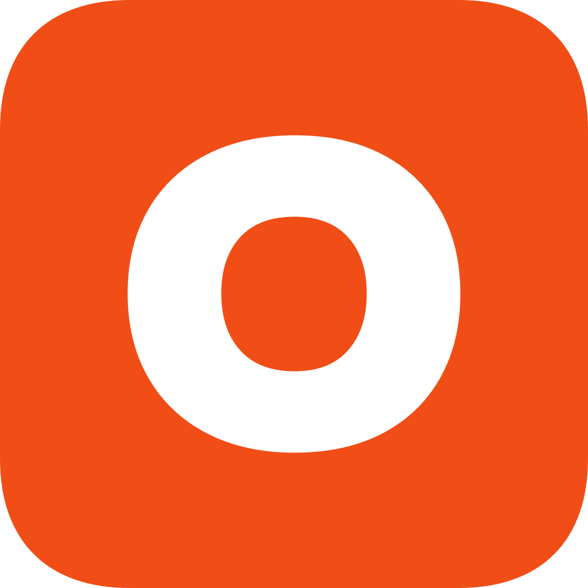
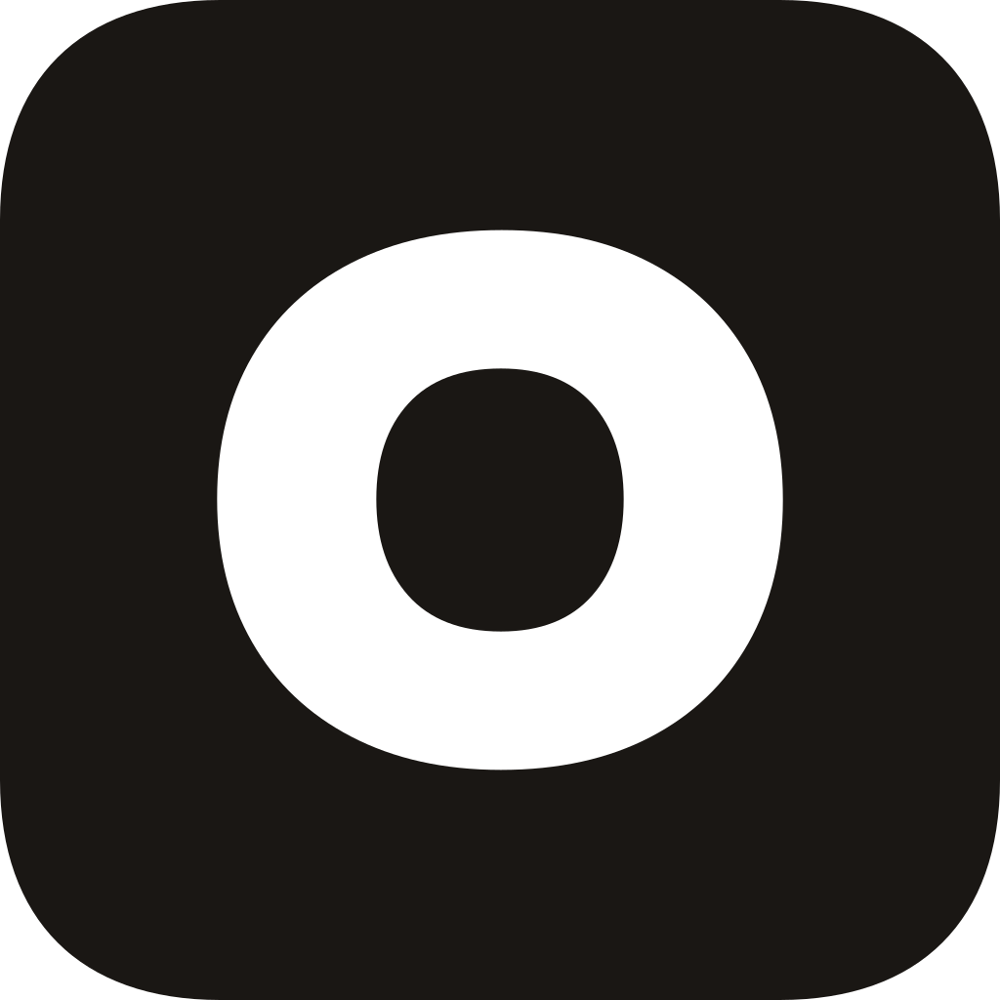
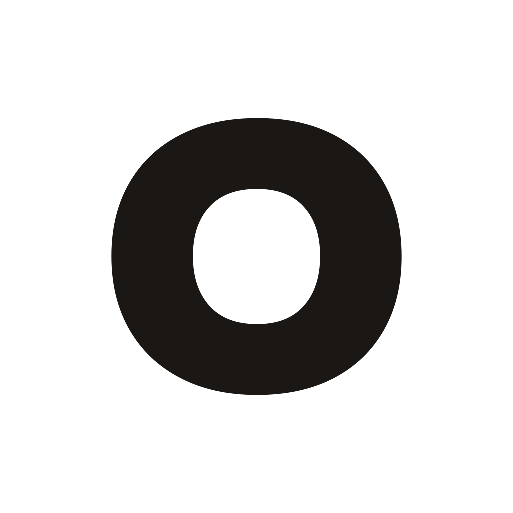
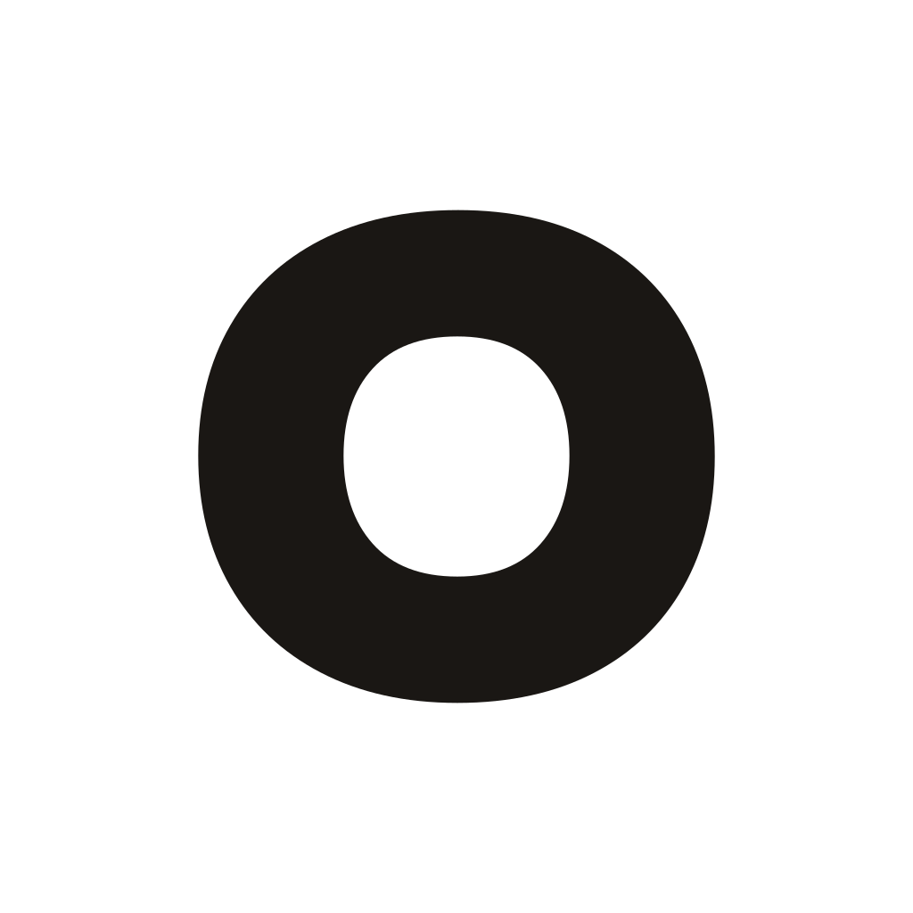
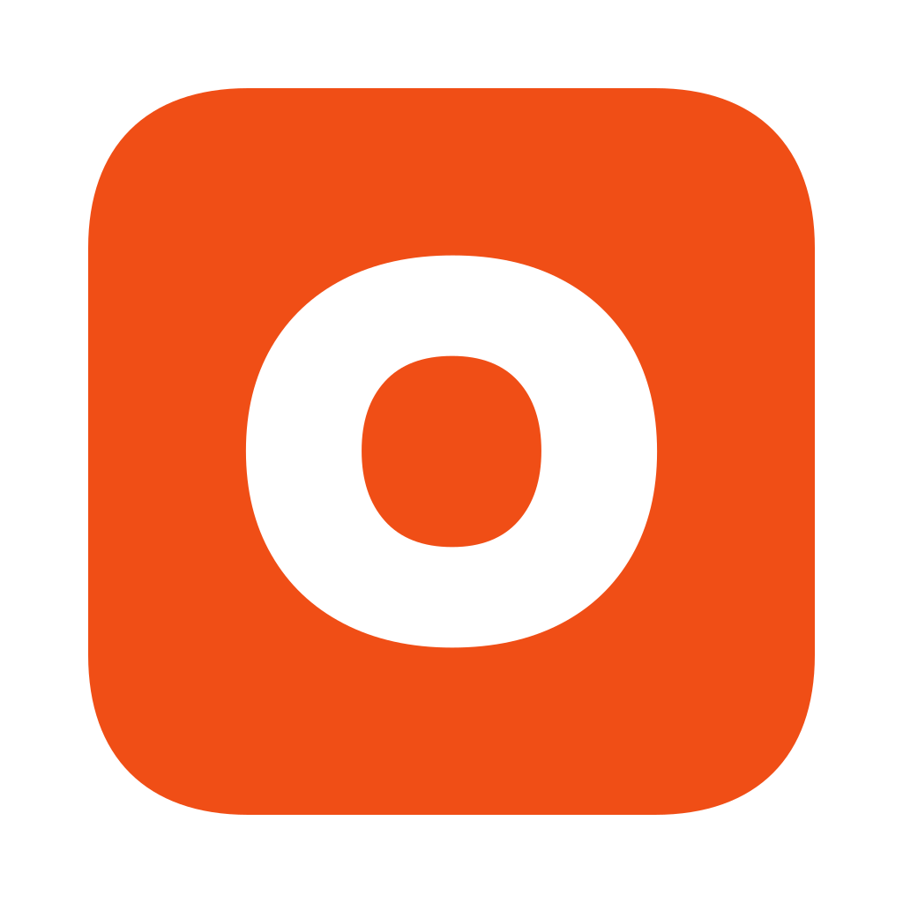
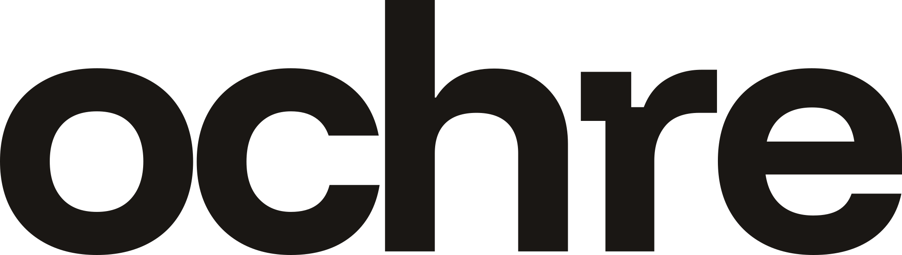
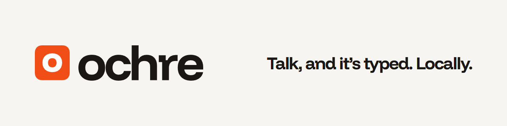
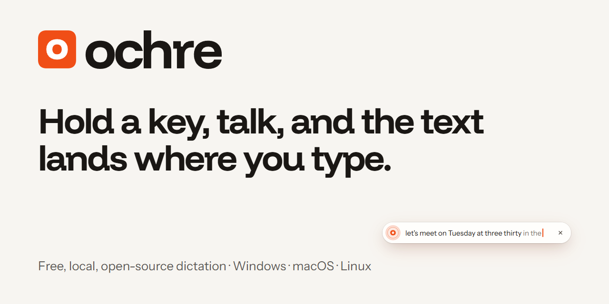
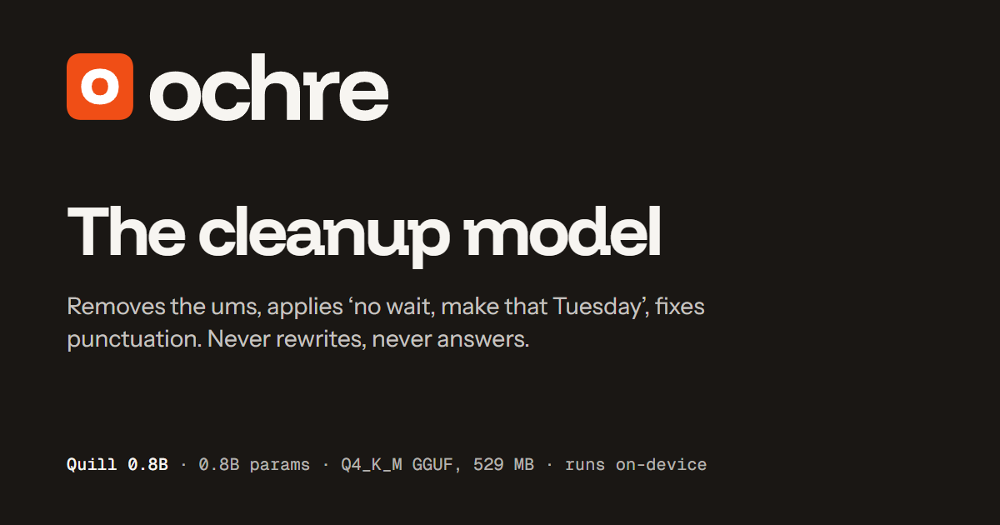

Talk, and it’s typed.
Locally.
The Ochre brand on one page: the icon, the wordmark, colour, type and how to use them. Every file is in app/icons/src/; the fonts are OFL and self-hosted.
Icon
A Funnel Display ExtraBold lowercase o, outlined, white on a flat vermilion squircle. Use the master at 48 px and up. At 32 px and below use the small cut, where the o fills 62% of the tile so its counter stays open at 16 px.





Tray states on a dark taskbar. Light taskbars get the ink tile.
Wordmark and lockup
ochre, lowercase, Funnel Display Bold at −0.045em, outlined. “Ochre” in prose, ochre in the CLI and in the wordmark. Clear space is a quarter of the icon height on every side; the lockup SVGs already include it (the dashed outline).

Colour
Paper, ink and one hero colour. Vermilion leans red; it is never recoloured toward amber.
| Hex | Role | Pair | Contrast | |
|---|---|---|---|---|
Aa | #D4400E | --accent: fills under white text (buttons, the locked pill) | white on it | 4.63 : 1 · AA |
Aa | #C23A0C | --accent-ink: orange text and links | on paper | 4.94 : 1 · AA |
| #F04E16 | icon tile and bright marks; never under text | on paper | 3.32 : 1 · graphic only | |
Aa | #FF8552 | --accent-ink, dark mode | on #1F1B18 | 7.11 : 1 · AAA |
| #F7F5F1 | paper: the canvas | |||
| #1A1714 | ink: text, and the dark canvas |
Type
Three families, all OFL and self-hosted in app/ui/theme/fonts/.
Do and don’t
Use the SVGs as they are.
The tile as drawn, on paper or ink.
No blooms or gradients on the mark.
The o is already round. Don’t ring it.
Not #EA6A1F amber. Ours is vermilion.
No sparkles, soundwaves or ornaments.
Scale uniformly. Below 48 px, use the small cut.
The name
Ochre is the earth pigment people used for their first marks. The oldest way to make a mark, for the newest way to write.
In context
The HUD pill, light by default, sits on a soft vermilion-tinted shadow. While you talk the brand o grows with your voice in place of level bars; locked dictation turns the whole pill vermilion, with a white o.

A free, local, open-source alternative to Wispr Flow.


Files
SVG masters (final artwork) live in app/icons/src/ and are rasterised by python app/icons/build_icons.py. The assets above are rendered by python docs/brand/render.py from docs/brand/src/.
- ochre-icon.svg
- ochre-icon-small.svg
- ochre-icon-macos.svg
- ochre-icon-mono-black.svg
- ochre-icon-mono-white.svg
- ochre-glyph.svg
- ochre-glyph-small.svg
- ochre-wordmark.svg
- ochre-wordmark-white.svg
- ochre-lockup-horizontal.svg
- ochre-lockup-horizontal-dark.svg
- favicon.svg
- tray/ochre-tray-*-{light,dark}.svg
- tray/macos/ochre-template-*.svg